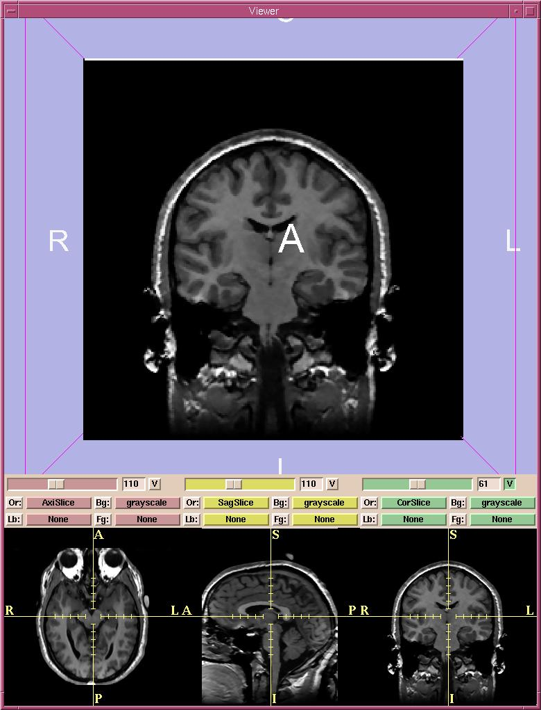

Slicer has multiple configurations to present image volumes.
By default, the normal view is selected. In normal view, the viewer window is divided
into two sections.
The upper portion of the view
window shows the 3D formatted version.
In the lower quarter of the viewer window, a 2D multi-plane
formatted version of the volume is shown.

- There are three 2D windows (red, yellow, and green).
You can select both grayscale and label map images into each of the 2D windows.
For example, Slicer will automatically put the Axial grayscale images into the first (red) 2D window as the background layer.
- In each 2D window, the slider selects which slice of the volume to display.
The numerical field shows the slice number.
- The V toggle button controls whether the selected slice is visible in the 3D viewer or not. In the figure above, only the slice from the green window is visible in the 3D viewer.
- There are Or (scan order), Bg (background), Fg (foreground),
and Lb (label map) buttons
for each of the three 2D windows.
- Use Or to change the scan order in each 2D window.
For example, you can use the Axial view in the first 2D window,
the Coronal in the second, and the Saggital in the third window.
Or you can use the Coronal view in the first and the other two views in the other two windows.
Or you can set each view individually, to suit your need.
- Use Bg to select which volume to put in the background layer.
- Use Fg to select a volume for the foreground layer,
which is superimposed over the background layer.
- Use Lb to select label map images for the label map layer,
to display results of a segmentation. Images loaded into the label map layer
will appear as outlines around the structures that were segmented.
(You can use Slicer to create label maps, and also to make models from them.
See the User's Guide for more information.)